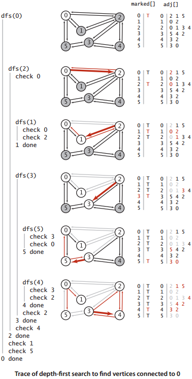
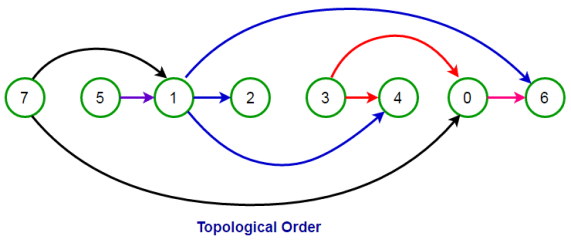
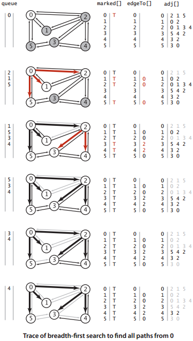

Graph algorithms
Traversal
Graph traversal is a systematic way to visit each vertex in a graph. Traversal allows us to answer questions like "Is there a path from x to y?" or "Does the graph contain a cycle?" Traversal may begin at any vertex, unlike tree traversal which typically begins at the root. There are two common ways to traverse a graph:- In depth-first search, we explore each path as deeply as possible before exploring the next path. It can be implemented with recursion.
- In breadth-first search, we explore vertices closer to the source before vertices farther from the source.
In other words, first visit all vertices you can reach by following 1 edge, then all vertices you can reach by following 2 edges, etc. It can be implemented with a queue. Breadth-first search finds the paths with the minimal number of edges.

Source: Sedgewick pp. 533, 539
Depth-first search
Note that the order in which we visit v's neighbors depends on their order in v's adjacency list.
edgeTo[w] is the vertex we came from to get to w;
we can use this array to print the path).
Cycle detection
A cycle is a path of at least 1 edge that starts and ends at the same vertex.
In both directed and undirected graphs, we can use DFS to detect cycles.
Call dfs on an arbitrary vertex. If there are still unmarked vertices,
repeat the process by calling dfs on an arbitrary unmarked vertex until all vertices are marked.
Cycles in undirected graphs: If we are ever adjacent to a vertex w that we visited earlier
(other than the vertex we just came from), the graph has a cycle
(starting at w, following the path that we took, and following the edge back to w).
Cycles in directed graphs: If we are ever adjacent to a vertex w that is currently on the recursion stack
(i.e. a vertex on the path that took us to the current vertex), the graph has a cycle.
We can use a boolean array to keep track of which vertices are currently on the recursion stack.
Topological sorting
In a directed acyclic graph, a topological sort is an ordering of vertices such that if there is an edge from x to y, then x is before y in the ordering.
For example, in a prerequisite graph, a topological sort is a valid order to take courses.
If the directed graph has a cycle, there is no topological sort.
DFS can be used for topological sorting. Initialize an empty list, then call dfs on an arbitrary vertex v.
After calling dfs on all vertices adjacent to v, add v to the front of the list.
If there are still unmarked vertices, repeat the process by calling dfs on an arbitrary unmarked vertex until all vertices are marked.
The list will be topologically sorted.

Directed acyclic graph, topologically sorted from left to right.
Source: techiedelight.com
Breadth-first search

Source: Sedgewick pp. 533, 539
Runtime
For a graph with V vertices and E edges, both DFS and BFS take O(V+E) time.
Each vertex is visited once, and in total there are 2E adjacent vertices to check (2E is the sum of the degrees of all vertices).